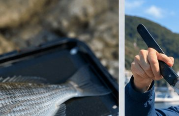
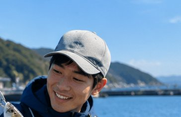

主な機能
釣果記録から分析まで、釣りに必要なすべてをワンストップで。

かんたん釣果記録
魚種・サイズ・匹数・釣り場・仕掛け・天気・メモをワンタップで記録。写真からの自動入力にも対応。

お気に入りマップ
釣れたポイントを地図にピン留め。場所ごとの釣果を見える化し、次の最適な釣り場を提案します。

釣行カレンダー
いつ・どこで・何が釣れたかをカレンダーで一覧。月別・季節別のパターンがひと目で分かります。

統計・分析
魚種別・釣り場別・月別にグラフで集計。ヒートマップで「釣れやすい条件」を発見できます。

潮見表・天気連携
潮位・気象・月齢データを自動連携。釣果と天候の関係を分析し、次回の釣行計画に役立てます。

タックル管理
ロッド・リール・ルアーを登録して相性を学習。AIが釣果データからタックルの組み合わせを提案します。
使い方はとてもシンプル
記録するだけで、次の釣果につながるデータが貯まります。
撮って記録
釣果を撮影して、魚種・サイズ・場所を記録します。
マップで管理
釣り場・潮位・天気を自動でひも付けて整理します。
分析する
グラフ・統計で釣れやすい条件を見える化します。
次の一匹へ
データをもとに最適な釣り場・タイミングを判断。
🎣 釣り日誌・記録アプリ
釣果を記録して分析しましょう
🎯 月間目標設定
📌 釣果を記録してデータを分析しましょう
🔍 フィルタ・ソート
＋ 釣果を記録する
📊 分析・集計
🎣 あなたの釣果にぴったり！おすすめ釣具
記録した釣果に基づいておすすめの釣具を表示します。
🔗 関連サービス
📖 使い方
- 記録したい項目を入力フォームに入力する
- 「追加」または「記録」ボタンをクリックする
- 記録一覧で過去のデータを確認する
- グラフや集計で傾向を把握する
- 継続的に記録して変化を追跡する
❓ よくある質問
Q: 釣果を日誌に記録するメリットは何ですか？
A: 釣果記録を積み重ねることで、「どの場所・時期・天気・潮位のときに釣れやすいか」というパターンが見えてきます。過去データを参照することで、次回釣行の計画を立てやすくなり、無駄な遠征を減らすことができます。仕掛けや餌の記録と合わせることで、自分だけのノウハウが蓄積されていき、経験年数に関わらず釣果の向上につながります。また記録を通じて気象・潮位・時間帯との関係を分析すると、釣りの科学的な理解も深まります。長期間記録を続けると、場所ごとの季節変化も把握でき、年間を通じた釣行計画が立てやすくなります。
Q: 季節ごとに釣れやすい魚はどう変わりますか？
A: 季節によって回遊魚の動きや魚の活性が大きく変わります。春（3〜5月）は水温上昇に伴い、真鯛・メバル・アジが活性化します。夏（6〜8月）はイナダ・タチウオ・アジが回遊し、夜釣りでのアナゴ・ウナギも狙いやすくなります。秋（9〜11月）はサバ・ブリ・ハマチなどの青物が最盛期を迎え、ショアジギングで人気の季節です。冬（12〜2月）はヒラメ・カレイ・クロダイが釣れやすく、投げ釣りや船釣りに向いた時期です。釣果記録に季節情報を蓄積することで、狙い時を正確に把握できるようになります。
Q: データのエクスポートや引き継ぎはできますか？
A: はい、「データ出力」ボタンからJSON形式でデータをエクスポートできます。エクスポートしたファイルは「データ読込」ボタンから再インポートできるため、端末の買い替えや機種変更時のデータ引き継ぎが可能です。記録したデータはブラウザのローカルストレージに保存されるため、同じブラウザを使い続ける限り自動でデータが保持されます。ただし異なるデバイスや別のブラウザとの自動同期は行われないため、引き継ぎにはエクスポート・インポートの手順を行ってください。ブラウザのキャッシュ削除・プライベートモードでの利用時はデータが失われる場合があります。
Q: 初心者でも釣果記録をつける価値はありますか？
A: 初心者にこそ釣果記録をつけることを強くおすすめします。最初は釣れない日が続くことも多いですが、記録を残すことで「何が上手くいかなかったか」を後から振り返ることができます。釣れなかった場所・時間・天気の条件を記録することで、次回は同じ失敗を避けられます。また上級者の友人や釣り仲間に記録を見せることで、的確なアドバイスをもらいやすくなります。記録を続けることで確実に成長しているという実感が得られ、釣りへのモチベーション維持にもつながります。
Q: 潮位・天気との関係はどのように活用すればいいですか？
A: 一般的に魚は「潮の動き（潮流）」が活発な時間帯に活性が上がります。満潮・干潮の前後2時間（潮止まりを避けた時間帯）は特に釣果が期待できると言われています。天気については曇りの日は魚が警戒心を緩めやすく、釣れやすい傾向があるとされています。逆に快晴で無風の日は海面が明るすぎてタナ（水深）が深くなることが多いです。記録に潮位・天気・風向き・水温を合わせて残すことで、時間をかけて自分なりのパターンが見えてきます。釣果記録とともに潮汐表を参照する習慣をつけると、釣果が向上しやすくなります。
📋 このツールの詳細
「釣り日誌・記録アプリ」は、釣果・釣り場・仕掛けを記録して分析。時期別・場所別の釣れやすさを管理。
釣り日記ツール — 釣果・釣り場・タックルを記録管理
このツールでできること
釣行の日時・場所・天候・水温・釣果（魚種・サイズ・数）・使用タックル・ルアー・エサを記録し、自分だけの釣りデータベースを作成できます。過去のデータを分析して「よく釣れる条件」を発見する機能も備えています。
釣りの費用と趣味としての経済性
釣りの初期費用は初心者セット（ロッド・リール・仕掛け）で1〜3万円から始められます。年間の釣り費用（釣具・交通費・釣り堀・遊漁料）は趣味の平均的な支出範囲です。釣った魚を食べることで食費の節約にもなり、自給自足的な楽しみ方もできます。
遊漁規則と持続可能な釣りの知識
都道府県の内水面漁業調整規則により、魚種・サイズ・禁漁期間が定められています。海釣りでは遊漁規則（外来魚リリース禁止等）を守ることが重要です。キャッチ＆リリースの推進と外来種（ブラックバス等）の持ち出し禁止が生態系保護につながります。
🔗 このツールと一緒によく使われるツール
学習・語学の効果と習慣データ
文部科学省・研究機関のデータをもとに、効果的な学習方法と習慣化のポイントを整理しました。
| 項目 | データ | 出典 |
|---|---|---|
| 英語習熟度（EF EPI）日本の順位 | EF EPI 2023年：世界87位（87カ国中） | Education First「EFEnglish Proficiency Index 2023」 |
| 社会人の学習時間（1日平均） | 約6分（学習している人の平均：約60分） | 総務省「社会生活基本調査」2021年 |
| スキルアップで給与上昇した割合 | 資格取得後に年収増加を実感：約40% | 複数の転職・スキルアップ調査から参考値 |
| 習慣化に必要な平均日数 | 約66日（21日は最低ライン） | Phillippa Lally et al. (2010) European Journal of Social Psychology |
⚠️ 計算結果の活用にあたって
よくある質問
- Q. 釣り初心者が最初に揃えるべき道具は？
- 釣り初心者が最初に揃えるべき基本道具として「釣り竿（ロッド）：初心者には万能ロッドまたはコンパクトな振り出し竿が便利」「リール：スピニングリールが操作しやすく初心者向け」「釣り糸（ライン）：ナイロンライン2〜3号が扱いやすい」「仕掛け（針・ウキ・重り・サルカン）：海釣りパック・セット品を活用すると簡単」があります。まず「堤防・漁港でのサビキ釣り（アジ・イワシ等）」から始めると釣りやすく入門に最適です。
- Q. 釣った魚を美味しく食べるための鮮度管理の方法は？
- 釣った魚の鮮度を保つための方法として「釣り上げたらすぐに神経締めまたは血抜きをする（血が残ると臭みの原因）」「海水氷（氷と海水を混ぜたもの）に入れて保冷する（急速に冷やすことで鮮度が保たれる）」「氷だけの場合は真水が魚体に直接触れないようにタオルや袋で包む（真水が身を傷める）」があります。適切な処置をすることで、釣ってから1〜2日後でも刺身が食べられる状態を維持できます。
- Q. 釣りの記録（釣り日記）をつけるメリットは？
- 釣り記録（釣り日記）をつけることのメリットとして「釣果パターンの把握（同じ場所・季節・天気・潮位で何が釣れたかを振り返れる）」「釣り場・仕掛け・えさの最適組み合わせを蓄積できる」「次回の釣りへのモチベーション向上」があります。記録する主な項目として「日時・場所・天気・潮位（満潮・干潮）・釣果（魚種・サイズ・数）・使用仕掛け・えさ」が参考になります。本ツールで釣り記録を継続することで、釣り技術が向上します。